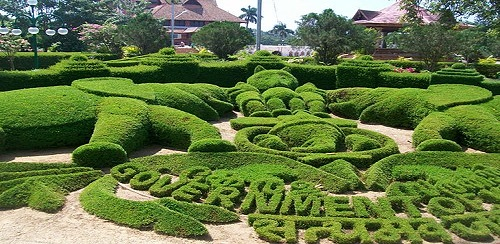

TOP ATTRACTIONS IN TRIVANDRUM
SHANGUMUKAM BEACH

Shankumugham Beach is a beach in Thiruvananthapuram district of Kerala, south India. The vast stretch of white sand and the serene atmosphere, away from the crowd in the city, provide all the ingredients for relaxation and for spending an ideal evening. There is also a “Star Fish Restaurant” with eating kiosks and open-air theatre with car parking facilities. Good food can be enjoyed at the Old Coffee House, just across the beach, which is also a vantage point for enjoying the sunset. Unfortunately, the beach is not well maintained with garbage littering the entire area.
THIRUVANANTHAPURAM ZOO
Thiruvananthapuram Zoo is one of the oldest Zoo in India. Similarly the Museum and Botanical Gardens are also one of the oldest of their kind in the country. Swathi Thirunal Rama Varma (1816–1846), the ruler of Travancore during 1830–1846, was the visionary behind the establishment of the Thiruvananthapuram Museum and Zoo.He had a broad variety of animals, including elephants in his horse breeding centre. In the Trivandrum, stables he incorporated a menagerie and kept tigers, panthers cheetahs, deer, bears and a lioness there. It was however left to his brother Uthram Thirunal Marthanda Varma and the then British Resident General Cullen which resulted in the establishment of Napier Museum and Zoo Thiruvananthapuram.
PADMANABHASWAMY TEMPLE

The Padmanabhaswamy temple is a Hindu temple located in Thiruvananthapuram, the state capital of Kerala, India. It is considered as the richest place of worship in the world. The name of the city of 'Thiruvananthapuram' in Malayalam translates to "The City of Lord Ananta", referring to the deity of the Padmanabhaswamy temple.The temple is built in an intricate fusion of the Chera style and the Dravidian style of architecture, featuring high walls, and a 16th-century gopura. While the Ananthapura temple at Kumbla in Kasaragod is considered as the original seat of the deity ("Moolasthanam"), architecturally to some extent, the temple is a replica of the Adikesava Perumal temple in Thiruvattar.